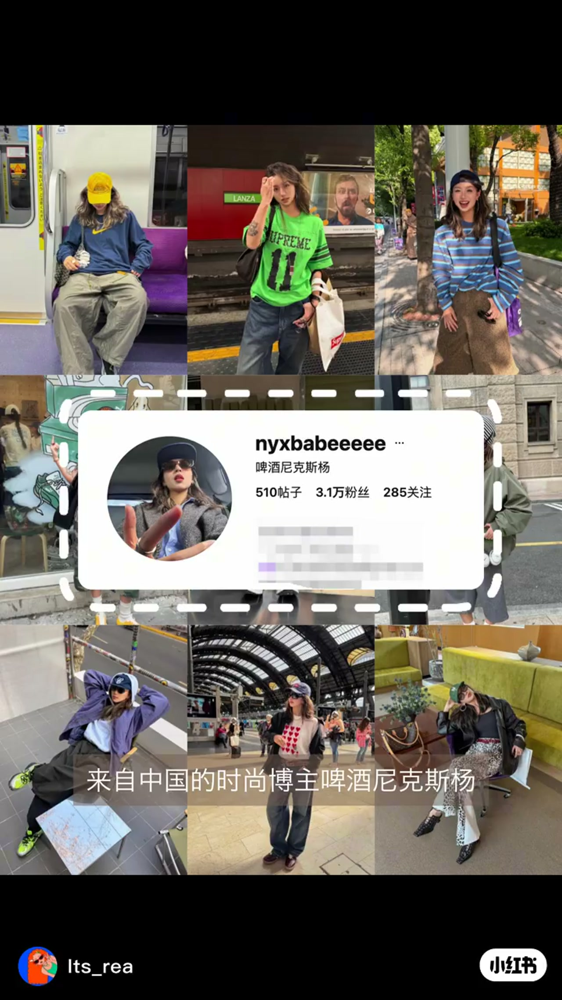
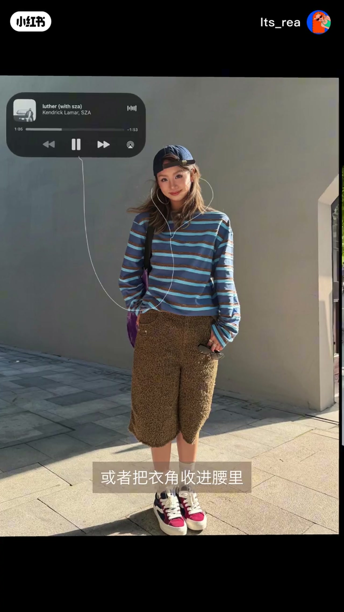
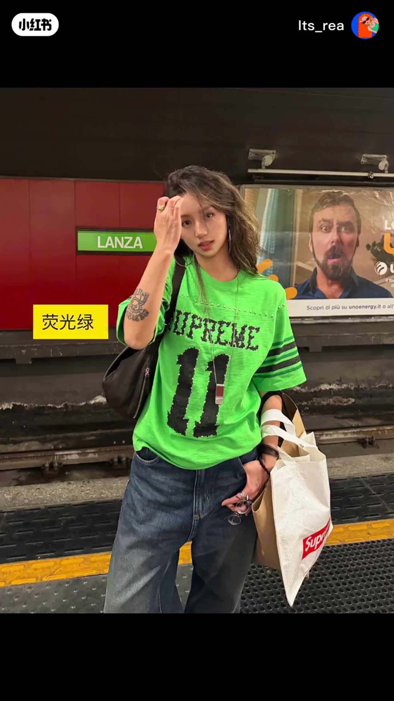

内容要点
Its_rea（闪闪）第5期拆解中国时尚博主「啤酒尼克斯杨」（账号 nyxbabeeeeee）的轻美式复古穿搭：喜欢宽松随性又带点九十年代运动感的人，可以按三条公式复刻——先用宽松下装做街头感，再用运动与复古符号定调，最后用眼镜和首饰把细节补完整。
知识结构
本期学轻美式复古；博主把宽松随性与九十年代运动感穿得轻松又有辨识度。
宽牛仔裤、工装裤、迷彩裤或宽短裤，上身搭短T/贴身上衣或把衣角收进腰里，下松上利落，整体不拖沓；普通人可用高腰宽直筒牛仔裤搭短T。
棒球帽、印花T、条纹迷彩与复古鞋定调；基础色藏蓝/灰/牛仔蓝/军绿，荧光绿、黄或紫提亮；复刻优先宽牛仔裤+棒球帽+复古鞋。
墨镜或彩色镜框改气质，耳环项链戒指手链补细节；普通人选一组即可。总公式：宽松下装、利落上衣、运动复古元素、潮流配饰。
轻美式复古不一定靠堆牌子，先把「下宽上利落」的廓形立住，再用棒球帽、印花、迷彩和复古鞋把年代感钉死，最后用一副眼镜或一组小首饰收细节。普通人不必全套叠戴，宽直筒牛仔裤 + 短T + 帽鞋三件套就能起步。
00:00-00:10开场：轻美式复古与博主辨识度
闪闪开场说明本期学习轻美式复古穿搭，样本来自中国时尚博主啤酒尼克斯杨。若你喜欢宽松随性、又带点九十年代运动感的美式穿搭，可以看他如何把这种风格穿得轻松又有辨识度。

00:10-00:39公式一二：宽松下装与运动复古符号
第一点：先用宽松下装做出街头感。宽牛仔裤、工装裤、迷彩裤或宽短裤，上面搭短T、贴身上衣，或把衣角收进腰里——「下身有松量，上身还有利落感，整体不会显得拖沓。」普通人可直接用高腰宽直筒牛仔裤搭短T恤。
第二点：用运动和复古符号定调。棒球帽、印花T恤、条纹迷彩和复古鞋子是常用元素；颜色上以藏蓝、灰、牛仔蓝、军绿打底，再加荧光绿、黄色或紫色提亮。想复刻他，优先准备宽牛仔裤、棒球帽和复古鞋子。


00:39-00:55公式三与总公式：眼镜首饰补完整
第三点：用眼镜和首饰把细节补完整。墨镜或彩色镜框能改变脸部气质，再搭配耳环、项链、戒指和手链。普通人不用全部叠戴，眼镜加耳环，或短项链加戒指，选一组就够。
最后记住公式：宽松下装、利落上衣、运动复古元素、潮流配饰。闪闪邀请观众留言还想看什么穿搭。
完整转录（36段）
以下文本由 Whisper medium 模型自动转录，可能存在少量识别误差，已尽可能修正。
本期学习的是轻美式复古穿搭
来自中国的时尚博主啤酒尼克斯扬
如果你喜欢宽松随性
又带点90年代运动感的美式穿搭
可以看看他是怎么把这种风格
穿得轻松又有辨识度的
闪闪给大家总结了三点
一 先用宽松下装做出接头感
他会穿宽牛仔裤 公装裤 迷彩裤
或者宽短裤
上面搭短T 贴身上衣
或者把一脚收进腰里
这样下身有松亮上身还有利落感
整体不会显得脱胎
普通人可以直接用高腰
宽直筒牛仔裤搭短T恤
二 用运动和复古符号定调
棒球帽 印花T恤
条纹迷彩和复古鞋子
都是他常用的元素
颜色上 他会用藏蓝 灰
牛仔蓝 军绿做基础
再加入荧光绿 黄色或紫色提亮
想复刻他 优先准备宽牛仔裤
棒球帽和复古鞋子
三 用眼镜和首饰把细节补完整
他会用墨镜或彩色镜框改变脸部气质
再搭配耳环 项链 戒指和手链
普通人不用全部迭代
眼镜加耳环 或者短项链加戒指
选一组就够
最后 记住这个公式
宽松下装 利落上衣
运动复古元素 潮流配饰
还想看什么穿搭
告诉闪闪 下期见